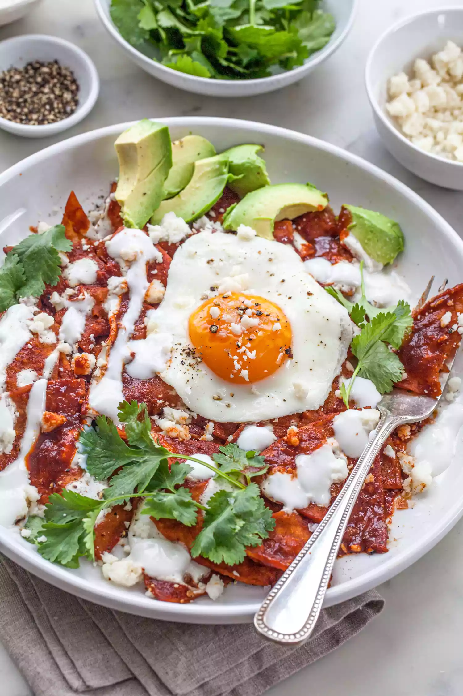

Summary
Chilaquiles are basically corn tortilla pieces that are
fried, cooked in salsa, and sprinkled with cheese.
They are often served for breakfast with eggs and a side of beans or
nopalitos.
Ingredients
- 12 corn tortillas
- Corn oil
- KOsher salt
- 1 1/2 to 2 cups red chile sauce or salsa verde
- SPrigs of epazote
- Cotija cheese
- Crema mexicana
- Cilantro
- 1 red onion, chopped
- Avocado
Steps
- Fry the tortillas
- Heat the salsa
- Add fried tortillas to the salsa